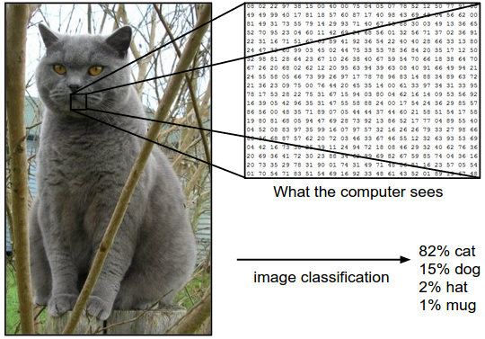
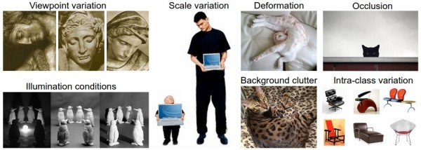
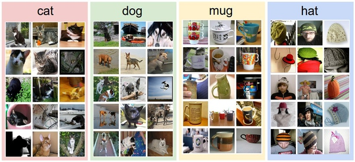
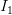
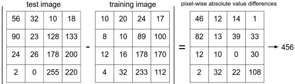
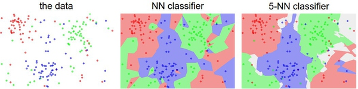

这是一篇介绍性教程，面向非计算机视觉领域的同学。教程将向同学们介绍图像分类问题和数据驱动方法。下面是内容列表：
- 图像分类、数据驱动方法和流程
- Nearest Neighbor分类器
- k-Nearest Neighbor 译者注：上篇翻译截止处
- 验证集、交叉验证集和超参数调参
- Nearest Neighbor的优劣
- 小结
- 小结：应用kNN实践
- 拓展阅读
图像分类
目标：这一节我们将介绍图像分类问题。所谓图像分类问题，就是已有固定的分类标签集合，然后对于输入的图像，从分类标签集合中找出一个分类标签，最后把分类标签分配给该输入图像。虽然看起来挺简单的，但这可是计算机视觉领域的核心问题之一，并且有着各种各样的实际应用。在后面的课程中，我们可以看到计算机视觉领域中很多看似不同的问题（比如物体检测和分割），都可以被归结为图像分类问题。
例子：以下图为例，图像分类模型读取该图片，并生成该图片属于集合 {cat, dog, hat, mug}中各个标签的概率。需要注意的是，对于计算机来说，图像是一个由数字组成的巨大的3维数组。在这个例子中，猫的图像大小是宽248像素，高400像素，有3个颜色通道，分别是红、绿和蓝（简称RGB）。如此，该图像就包含了248X400X3=297600个数字，每个数字都是在范围0-255之间的整型，其中0表示全黑，255表示全白。我们的任务就是把这些上百万的数字变成一个简单的标签，比如“猫”。
—————————————————————————————————————————
图像分类的任务，就是对于一个给定的图像，预测它属于的那个分类标签（或者给出属于一系列不同标签的可能性）。图像是3维数组，数组元素是取值范围从0到255的整数。数组的尺寸是宽度x高度x3，其中这个3代表的是红、绿和蓝3个颜色通道。
—————————————————————————————————————————
困难和挑战：对于人来说，识别出一个像“猫”一样视觉概念是简单至极的，然而从计算机视觉算法的角度来看就值得深思了。我们在下面列举了计算机视觉算法在图像识别方面遇到的一些困难，要记住图像是以3维数组来表示的，数组中的元素是亮度值。
- 视角变化（Viewpoint variation）：同一个物体，摄像机可以从多个角度来展现。
- 大小变化（Scale variation）：物体可视的大小通常是会变化的（不仅是在图片中，在真实世界中大小也是变化的）。
- 形变（Deformation）：很多东西的形状并非一成不变，会有很大变化。
- 遮挡（Occlusion）：目标物体可能被挡住。有时候只有物体的一小部分（可以小到几个像素）是可见的。
- 光照条件（Illumination conditions）：在像素层面上，光照的影响非常大。
- 背景干扰（Background clutter）：物体可能混入背景之中，使之难以被辨认。
- 类内差异（Intra-class variation）：一类物体的个体之间的外形差异很大，比如椅子。这一类物体有许多不同的对象，每个都有自己的外形。
—————————————————————————————————————————
—————————————————————————————————————————
—————————————————————————————————————————
一个有4个视觉分类的训练集。在实际中，我们可能有上千的分类，每个分类都有成千上万的图像。
—————————————————————————————————————————
图像分类流程。在课程视频中已经学习过，图像分类就是输入一个元素为像素值的数组，然后给它分配一个分类标签。完整流程如下：
- 输入：输入是包含N个图像的集合，每个图像的标签是K种分类标签中的一种。这个集合称为训练集。
- 学习：这一步的任务是使用训练集来学习每个类到底长什么样。一般该步骤叫做训练分类器或者学习一个模型。
- 评价：让分类器来预测它未曾见过的图像的分类标签，并以此来评价分类器的质量。我们会把分类器预测的标签和图像真正的分类标签对比。毫无疑问，分类器预测的分类标签和图像真正的分类标签如果一致，那就是好事，这样的情况越多越好。
Nearest Neighbor分类器
作为课程介绍的第一个方法，我们来实现一个Nearest Neighbor分类器。虽然这个分类器和卷积神经网络没有任何关系，实际中也极少使用，但通过实现它，可以让读者对于解决图像分类问题的方法有个基本的认识。
图像分类数据集：CIFAR-10。一个非常流行的图像分类数据集是CIFAR-10。这个数据集包含了60000张32X32的小图像。每张图像都有10种分类标签中的一种。这60000张图像被分为包含50000张图像的训练集和包含10000张图像的测试集。在下图中你可以看见10个类的10张随机图片。
—————————————————————————————————————————
—————————————————————————————————————————
假设现在我们有CIFAR-10的50000张图片（每种分类5000张）作为训练集，我们希望将余下的10000作为测试集并给他们打上标签。Nearest Neighbor算法将会拿着测试图片和训练集中每一张图片去比较，然后将它认为最相似的那个训练集图片的标签赋给这张测试图片。上面右边的图片就展示了这样的结果。请注意上面10个分类中，只有3个是准确的。比如第8行中，马头被分类为一个红色的跑车，原因在于红色跑车的黑色背景非常强烈，所以这匹马就被错误分类为跑车了。
那么具体如何比较两张图片呢？在本例中，就是比较32x32x3的像素块。最简单的方法就是逐个像素比较，最后将差异值全部加起来。换句话说，就是将两张图片先转化为两个向量和 ，然后计算他们的L1距离：
，然后计算他们的L1距离：
—————————————————————————————————————————
以图片中的一个颜色通道为例来进行说明。两张图片使用L1距离来进行比较。逐个像素求差值，然后将所有差值加起来得到一个数值。如果两张图片一模一样，那么L1距离为0，但是如果两张图片很是不同，那L1值将会非常大。
—————————————————————————————————————————
下面，让我们看看如何用代码来实现这个分类器。首先，我们将CIFAR-10的数据加载到内存中，并分成4个数组：训练数据和标签，测试数据和标签。在下面的代码中，Xtr（大小是50000x32x32x3）存有训练集中所有的图像，Ytr是对应的长度为50000的1维数组，存有图像对应的分类标签（从0到9）：
Xtr, Ytr, Xte, Yte = load_CIFAR10('data/cifar10/') # a magic function we provide# flatten out all images to be one-dimensionalXtr_rows = Xtr.reshape(Xtr.shape[0], 32 * 32 * 3) # Xtr_rows becomes 50000 x 3072Xte_rows = Xte.reshape(Xte.shape[0], 32 * 32 * 3) # Xte_rows becomes 10000 x 3072nn = NearestNeighbor() # create a Nearest Neighbor classifier classnn.train(Xtr_rows, Ytr) # train the classifier on the training images and labelsYte_predict = nn.predict(Xte_rows) # predict labels on the test images# and now print the classification accuracy, which is the average number# of examples that are correctly predicted (i.e. label matches)print 'accuracy: %f' % ( np.mean(Yte_predict == Yte) )import numpy as npclass NearestNeighbor(object):def __init__(self):passdef train(self, X, y):""" X is N x D where each row is an example. Y is 1-dimension of size N """# the nearest neighbor classifier simply remembers all the training dataself.Xtr = Xself.ytr = ydef predict(self, X):""" X is N x D where each row is an example we wish to predict label for """num_test = X.shape[0]# lets make sure that the output type matches the input typeYpred = np.zeros(num_test, dtype = self.ytr.dtype)# loop over all test rowsfor i in xrange(num_test):# find the nearest training image to the i'th test image# using the L1 distance (sum of absolute value differences)distances = np.sum(np.abs(self.Xtr - X[i,:]), axis = 1)min_index = np.argmin(distances) # get the index with smallest distanceYpred[i] = self.ytr[min_index] # predict the label of the nearest examplereturn Ypred如果你用这段代码跑CIFAR-10，你会发现准确率能达到38.6%。这比随机猜测的10%要好，但是比人类识别的水平（据研究推测是94%）和卷积神经网络能达到的95%还是差多了。点击查看基于CIFAR-10数据的Kaggle算法竞赛排行榜。

distances = np.sqrt(np.sum(np.square(self.Xtr - X[i,:]), axis = 1))注意在这里使用了np.sqrt，但是在实际中可能不用。因为求平方根函数是一个单调函数，它对不同距离的绝对值求平方根虽然改变了数值大小，但依然保持了不同距离大小的顺序。所以用不用它，都能够对像素差异的大小进行正确比较。如果你在CIFAR-10上面跑这个模型，正确率是35.4%，比刚才低了一点。
L1和L2比较。比较这两个度量方式是挺有意思的。在面对两个向量之间的差异时，L2比L1更加不能容忍这些差异。也就是说，相对于1个巨大的差异，L2距离更倾向于接受多个中等程度的差异。L1和L2都是在p-norm常用的特殊形式。
k-Nearest Neighbor分类器
—————————————————————————————————————————
上面示例展示了Nearest Neighbor分类器和5-Nearest Neighbor分类器的区别。例子使用了2维的点来表示，分成3类（红、蓝和绿）。不同颜色区域代表的是使用L2距离的分类器的决策边界。白色的区域是分类模糊的例子（即图像与两个以上的分类标签绑定）。需要注意的是，在NN分类器中，异常的数据点（比如：在蓝色区域中的绿点）制造出一个不正确预测的孤岛。5-NN分类器将这些不规则都平滑了，使得它针对测试数据的泛化（generalization）能力更好（例子中未展示）。注意，5-NN中也存在一些灰色区域，这些区域是因为近邻标签的最高票数相同导致的（比如：2个邻居是红色，2个邻居是蓝色，还有1个是绿色）。
—————————————————————————————————————————